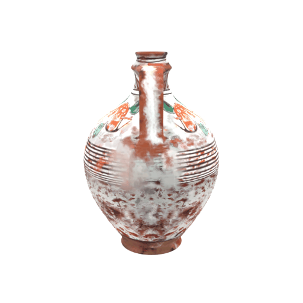
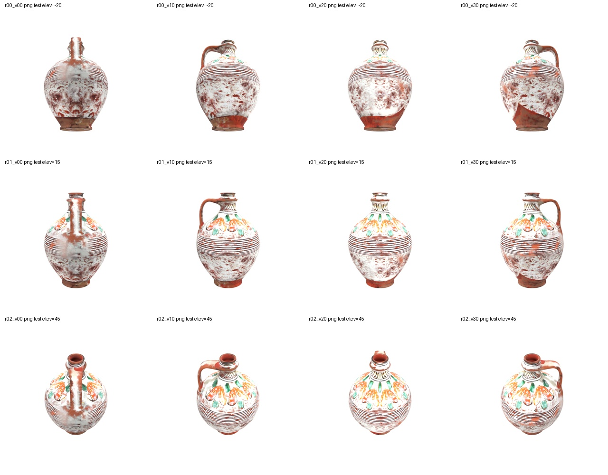
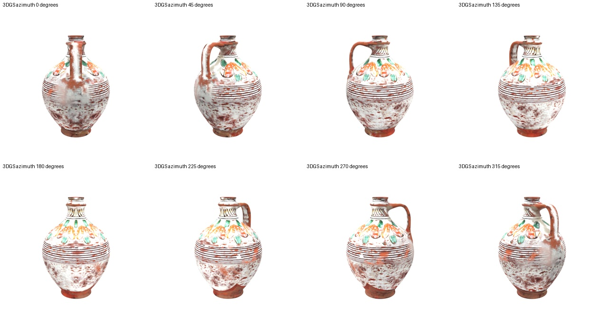
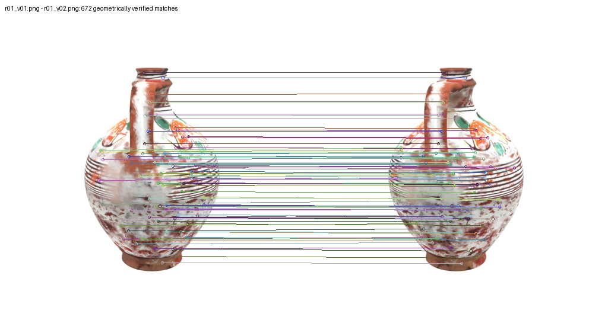
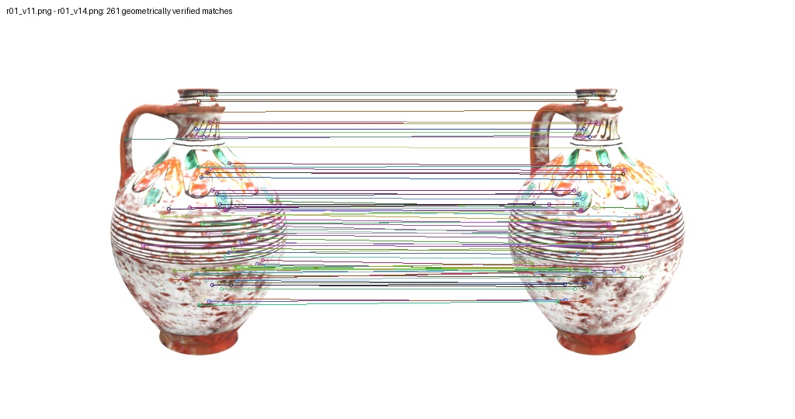
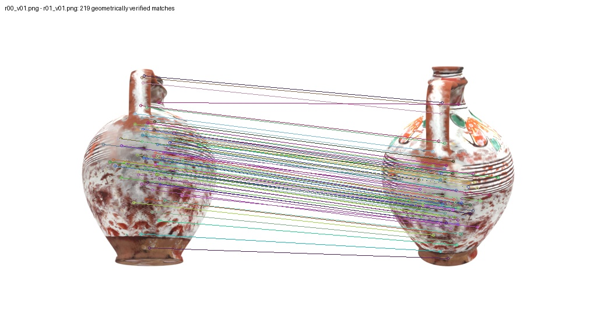
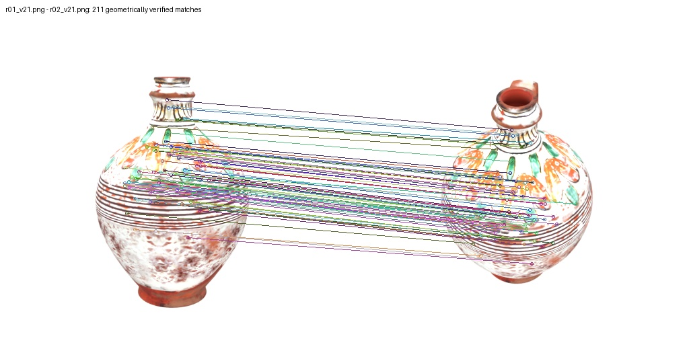

UID：a904a1c301f84bbb8af232dd612d436d · SfM 初始化 → 官方 3DGS

96 张训练 / 24 张测试；相机注册 96/96；稀疏点 9,068；重投影误差 0.282 px。
30,000 步，179,200 个高斯；全图 PSNR 25.864 dB，SSIM 0.93640，前景 PSNR 18.923 dB。


每张图最多画 80 条线，标题和下表记录全部几何验证内点数量。
r01_v01.png ↔ r01_v02.png：672 个内点。

r01_v11.png ↔ r01_v14.png：261 个内点。

r00_v01.png ↔ r01_v01.png：219 个内点。

r01_v21.png ↔ r02_v21.png：211 个内点。

点击视角可查看真实图像、预测图像及放大的误差。
| 视角 | 前景 PSNR | 全图 PSNR | SSIM |
|---|---|---|---|
| r00_v00.png | 22.568 | 29.032 | 0.95405 |
| r00_v05.png | 18.608 | 25.006 | 0.91981 |
| r00_v10.png | 16.355 | 22.937 | 0.89640 |
| r00_v15.png | 15.403 | 22.225 | 0.89285 |
| r00_v20.png | 15.519 | 22.415 | 0.89818 |
| r00_v25.png | 16.784 | 23.580 | 0.91472 |
| r00_v30.png | 19.376 | 25.885 | 0.93768 |
| r00_v35.png | 22.368 | 28.535 | 0.95555 |
| r01_v00.png | 19.121 | 26.039 | 0.93266 |
| r01_v05.png | 17.463 | 24.244 | 0.92307 |
| r01_v10.png | 16.643 | 23.475 | 0.92164 |
| r01_v15.png | 17.138 | 24.056 | 0.93633 |
| r01_v20.png | 17.198 | 24.290 | 0.93961 |
| r01_v25.png | 17.104 | 23.951 | 0.92984 |
| r01_v30.png | 17.289 | 24.039 | 0.92224 |
| r01_v35.png | 18.812 | 25.439 | 0.92991 |
| r02_v00.png | 19.722 | 27.244 | 0.94520 |
| r02_v05.png | 19.292 | 26.801 | 0.95044 |
| r02_v10.png | 20.191 | 27.480 | 0.95869 |
| r02_v15.png | 24.208 | 31.546 | 0.98259 |
| r02_v20.png | 25.094 | 32.705 | 0.98677 |
| r02_v25.png | 20.431 | 27.719 | 0.96263 |
| r02_v30.png | 18.505 | 25.742 | 0.94115 |
| r02_v35.png | 18.970 | 26.360 | 0.94151 |
7,000 步前景 PSNR：18.876 dB。7k 对照图 · 30k 同视角对照图。
| 独立测试高度 | 视角数 | 前景 PSNR | 全图 PSNR | 示例 |
|---|---|---|---|---|
| 0° | 12 | 16.976 | 23.655 | 对照图 |
| 30° | 12 | 18.972 | 26.026 | 对照图 |
| 60° | 12 | 21.883 | 29.693 | 对照图 |
0°/30°位于训练高度之间，60°超过训练最高高度。所有测试图像未参与训练。逐视角指标
本页为可提交的紧凑结果。原始数据、SQLite 数据库、高斯 PLY、训练检查点和全部 PNG 保存在本地 outputs/ 对应目录。